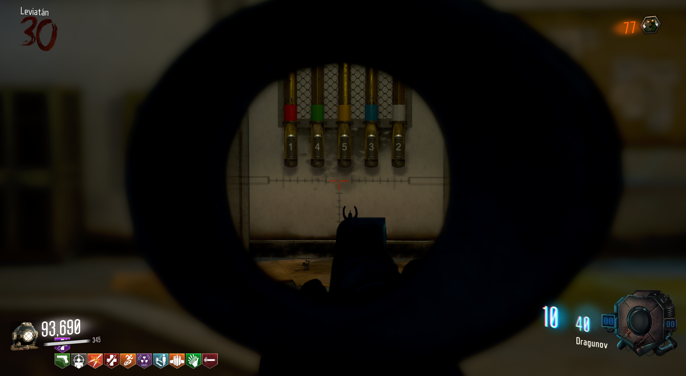
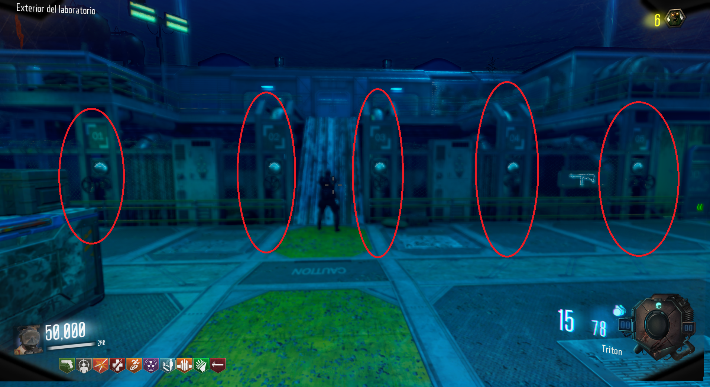
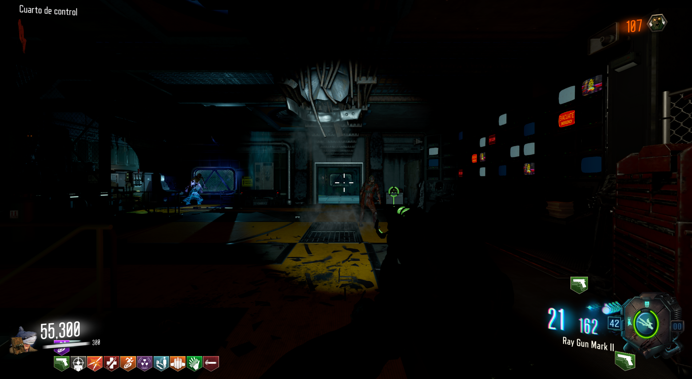

Easter Egg (Leviathan)
Requisitos:
Tener granadas QED, dispositivo Gersk, y los puños.
Para completar el Easter Egg de Leviathan, necesitaremos obtener tres objetos.
Dispositivo Vrill:
Si ya hemos obtenido los puños, solo debemos de ir a la Oficina y lanzar un puñetazo al cuadro de la pared.
Dentro estará el dispositivo.
Cristal:
Para el siguiente objeto, tendremos que ir al Laboratorio e interactuar con esta puerta de metal, hasta que nos hablen desde el otro lado.
Una vez que nos hable, iremos al Almacén y veremos el código de los ordenadores.
En la sala hay 4 botones que tendremos que presionar en un orden, según lo que nos dice la consola.
Cada ordenador tiene asignado su botón, tendremos que presionar el botón del ordenador que muestra un 1, luego el 2, el 3 y el 4.
ORDENADORES :
BOTONES asignados a su correspondiente ordenador:
También podemos seguir los cables de detrás de los ordenadores y nos llevarán a su correspondiente botón.
Si lo hicimos correctamente, los ordenadores empezarán a mostrar una secuencia de colores que tendremos que ir memorizando y repetir.
Al igual que en el Easter Egg de Moon, aquí una herramienta para apuntar el orden de los colores.
Si lo hacemos correctamente, los monitores nos mostrarán 4 números que tendremos que recordar.
Tendremos que entrar al PaP, introducir los números en el panel interactuando uno por uno con ellos y luego con el enter.
Una puerta dentro del submarino se abrirá y podremos obtener la válvula.
Ahora tendremos que ir a 5 ubicaciones, colocar la válvula y girarla una vez.

Luego iremos a la sala de Leviathan y en la habitación 3, veremos unas tuberías con colores y números.
El color representa el color de la válvula y el número la presión que hay que darle.

Por ejemplo, si en la número 1, la del Almacén, la válvula era verde, según la foto anterior el verde es 4. De esta manera asignamos el 1 a presión 4.
Aquí una herramienta para ir apuntándolo todo:
Cuando tengamos todos los valores iremos a la zona de las válvulas, entre el Biodomo y el Acuario.
Aquí pondremos a cada número su presión asignada.

Si lo hacemos bien, escucharemos un sonido de confirmación.
Ahora iremos a la puerta del Laboratorio, pondremos la válvula y la accionaremos.
Un científico saldrá del lugar y tendremos que escoltarlo durante un rato.
Podrán atacarle y tendremos que revivirlo como un jugador.
Tras equivocarse una vez de camino, llegará a esta sala y podremos obtener el cristal.
Uranio:
Para el último objeto, tendremos que ir a la zona de Leviathan e interactuar con el botón rojo del medio.
Después tendremos que usar el Hacker con una de estas consolas.
Aquí todas las localizaciones del hacker:
Al usarlo con una, un aparato aleatorio empezará a hacer un sonido y tendremos que buscarlo e interactuar con él.
Tras hacerlo, volveremos a Leviathan y hackearemos otra consola, así hasta completar las cuatro.
Localizaciones de los aparatos:
Al terminar con las cuatro consolas, iremos a la zona debajo de la sala de la Terminal e interactuamos con el botón para soltar la mina.
Luego saldremos fuera de la Cafetería y veremos una mina flotando.
Tendremos que esperar a que pase un submarino por encima y dispararle para destruirlo.
Iremos al Silo de Cohetes y veremos el submarino destruído.
En ese momento podremos obtener el Urano.
El urano solo lo podremos transportar bajo el agua, por lo que debemos de inundar algunas salas para llegar hasta Leviathan.
Aquí la mejor ruta:

Tendremos que poner las excavadoras a funcionar.
Introduciendo códigos en el PaP podremos ponerlas en marcha.
Aquí una lista de códigos:
Al terminar el paso anterior tendremos que estabilizar el Uranio para ello haremos lo siguiente:
Reserva de energía:
En ese momento se irá la electricidad de todo el mapa y tendremos que reestablecerla.
Para ello tendremos que accionar tres paneles y aguantar un tiempo encerrados en la habitación en la que se encuentran, mientras vienen zombies.
Aquí las tres ubicaciones:
Luego iremos a la sala de la Terminal y subiremos la palanca de la reserva de energía.

El siguiente paso es lanzar una granada QED a tres luces que han aparecido en el mapa.
Código para obtener QED en el PaP: 9355
Aquí las tres ubicaciones:

Acceder a la Batalla final:
Volveremos a Leviathan y dejaremos los tres objetos en su lugar:
Luego lanzaremos un dispositivo Gersk al hombre flotante.
Aquí una manera de conseguir el dispositivo Gersk gratis:
Volveremos a llevarnos el dispositivo Vrill e iremos a la zona del Submarino para interactuar con el botón.
Batalla final:
Kraken parte 1:
Tendremos que disparar a los puntos débiles del Kraken para derrotarlo.
Buzo:
Al acabar con él, el buzo saltará y tendremos que matarlo también.
Kraken parte 2:
Al matar al Buzo, el Kraken volverá a salir y tendremos que matarlo de la misma manera.
Esta vez tendrá un ataque especial que nos matará de un golpe si no nos cubrimos detrás de los contenedores.
Al acabar con él, habremos terminado el Easter Egg de Leviathan.